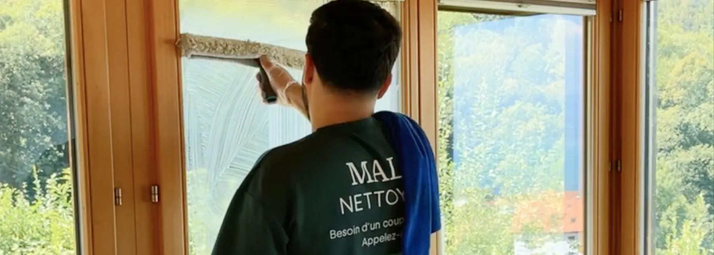

- Zone couverte : Fribourg, Estavayer-le-Lac, Domdidier, Broye fribourgeoise et environs
- Méthode pro : eau + liquide vaisselle, raclette, perche télescopique ou robot selon la surface
- Sans traces garanties : résultat vérifié avant départ de l'équipe
- Fourchettes : 150 – 450 CHF selon surface et type de vitres
- Délai : réponse sous 24h, intervention rapide selon disponibilité
Pourquoi le nettoyage de vitres demande un professionnel dans le canton de Fribourg
Le canton de Fribourg présente deux particularités qui compliquent le nettoyage de vitres en autonomie.
L'eau très dure. Dans la Broye fribourgeoise, la dureté de l'eau dépasse régulièrement 30 °fH. Chaque goutte d'eau qui sèche sur une vitre laisse un dépôt calcaire visible. Sans méthode adaptée — raclette immédiate, produit bien dosé — les traces reviennent systématiquement quelques minutes après le nettoyage.
Les bâtiments de hauteur variable. Entre les immeubles de Fribourg-ville, les maisons individuelles de la Broye et les fermes rénovées du Lac, les configurations de vitres sont très différentes. Certaines nécessitent une perche télescopique, d'autres un robot laveur — un équipement que peu de particuliers possèdent.
Des vitres impeccables dans le canton de Fribourg
Broye fribourgeoise & environs · Sans traces garanti · Devis en 24h
Voir le service nettoyage de vitres →Les types de vitres que nous nettoyons dans le canton de Fribourg
Chaque configuration demande un outil et une méthode différents.
| Type de vitre | Outil utilisé | Situation typique |
|---|---|---|
| Fenêtres rez-de-chaussée | Raclette professionnelle | Maisons, appartements standard |
| Fenêtres d'étage | Perche télescopique | Immeubles, maisons à étages |
| Grandes baies vitrées | Robot laveur + finitions | Villas, locaux professionnels |
| Vitres de véranda | Raclette + perche selon hauteur | Maisons individuelles |
| Vitrines commerciales | Raclette + mouilleur | Commerces, cabinets |
| Vitres parties communes | Raclette ou perche | PPE, immeubles locatifs |

Combien coûte un nettoyage de vitres à Fribourg
Les tarifs pratiqués dans le canton de Fribourg sont proches de ceux de la Broye vaudoise. Voici les fourchettes indicatives observées sur le marché.
| Type de prestation | Fourchette indicative |
|---|---|
| Appartement 2.5-3.5 pièces (intérieur + extérieur) | 150 – 250 CHF |
| Maison individuelle (intérieur + extérieur) | 250 – 450 CHF |
| Locaux professionnels / vitrine | Sur devis selon m² |
| Nettoyage vitres parties communes PPE | Sur devis selon nombre |
| Passage saisonnier (2× par an, contrat) | Tarif réduit sur devis |
Les communes couvertes dans le canton de Fribourg
Malo Nettoyage intervient depuis Payerne (à 30 km de Fribourg-ville) dans l'ensemble de la Broye fribourgeoise et dans les communes voisines du canton.
Broye fribourgeoise
Estavayer-le-Lac, Domdidier, Belmont-Broye (Dompierre, Léchelles, Russy), Saint-Aubin (FR), Cheyres-Châbles, Delley-Portalban, Gletterens, Vallon, Cugy (FR), Nuvilly, Sévaz, Lully, Châtillon (FR), Montagny (FR), Surpierre.
District du Lac (Seebezirk)
Murten (Morat), Courtepin, Misery-Courtion, Cressier (FR), Gurmels, Bas-Vully, Haut-Vully.
Fribourg et environs
Fribourg-ville et communes périphériques selon volume et nature de la prestation (Givisiez, Granges-Paccot, Matran, Villars-sur-Glâne).
La méthode que nous utilisons
Sans entrer dans les détails techniques complets (disponibles dans nos guides dédiés), voici les grands principes de notre intervention.
La recette pro simplissime. Eau tiède et une goutte de liquide vaisselle — c'est notre solution de nettoyage pour les vitres courantes. Pas de produit miracle, pas de spray coûteux. Ce mélange dissout les résidus sans laisser de film résiduel.
Trois outils selon la surface. Raclette professionnelle pour les vitres accessibles, perche télescopique pour les hauteurs, robot laveur pour les grandes surfaces. Nous choisissons l'outil adapté à chaque configuration — pas un seul outil pour tout.
Zéro trace garantie. Avant de quitter le chantier, chaque vitre est contrôlée en lumière rasante. C'est la même vérification que fait une régie lors d'un état des lieux.
Écologique par défaut. Notre solution de nettoyage vitres est biodégradable. Pas de produits chimiques agressifs, pas de résidus sur les cadres ou les joints.
Nettoyage de vitres et fin de bail dans le canton de Fribourg
Un cas particulier mérite d'être mentionné : les nettoyages de vitres dans le cadre d'un état des lieux de sortie.
Dans le canton de Fribourg, les régies vérifient systématiquement les vitres lors de l'état des lieux. La technique de contrôle est la même partout : l'inspecteur se place de côté, face à la lumière. Chaque trace devient alors visible, même celles qu'on ne voit pas en regardant la vitre de face.
Nous intervenons régulièrement pour des nettoyages de vitres combinés à une fin de bail complète dans la Broye fribourgeoise — une prestation coordonnée qui évite de faire appel à deux prestataires différents.
FAQ – Nettoyage de vitres à Fribourg
Malo Nettoyage intervient-il à Fribourg-ville ?
Oui, selon la nature et le volume de la prestation. Pour un nettoyage de vitres seul dans Fribourg-ville, contactez-nous pour vérifier la disponibilité et les conditions. Pour une prestation combinée (vitres + fin de bail, ou vitres + nettoyage complet), nous nous déplaçons régulièrement dans le canton.
À quelle fréquence faire nettoyer ses vitres dans la Broye fribourgeoise ?
Deux fois par an est la fréquence minimale recommandée pour un logement standard. Dans la Broye fribourgeoise où l'eau est particulièrement dure, un passage printanier (après les pollens) et un passage automnal (avant l'hiver) donnent les meilleurs résultats. Pour les locaux professionnels très exposés, une fréquence trimestrielle est préférable.
Le nettoyage de vitres inclut-il les cadres et les rainures ?
Oui, systématiquement. Nettoyer le verre sans nettoyer les cadres n'a aucun sens : la poussière accumulée dans les rainures se redépose sur le verre propre à la première ouverture. Notre intervention inclut toujours les cadres, les rainures et les appuis extérieurs.
Faut-il être présent lors du nettoyage de vitres ?
Non, pas obligatoirement. Pour les vitres extérieures accessibles depuis l'extérieur, votre présence n'est pas nécessaire. Pour les vitres intérieures, un accès aux locaux est en revanche indispensable. Nous nous adaptons à vos contraintes horaires.
Proposez-vous des contrats de nettoyage de vitres réguliers dans le canton de Fribourg ?
Oui. Pour les propriétaires, régies et entreprises qui souhaitent un entretien régulier (semestriel, trimestriel ou mensuel), nous proposons des contrats avec tarif préférentiel et planification à l'avance. C'est la solution la plus pratique pour les PPE et les locaux professionnels.
En résumé
Le nettoyage de vitres dans le canton de Fribourg demande une méthode adaptée à l'eau dure de la région et un équipement professionnel pour les hauteurs. Malo Nettoyage intervient dans toute la Broye fribourgeoise depuis Payerne, avec une méthode sans traces garantie et des tarifs transparents. Pour un logement standard, comptez 150 à 450 CHF selon la surface et le type de vitres.